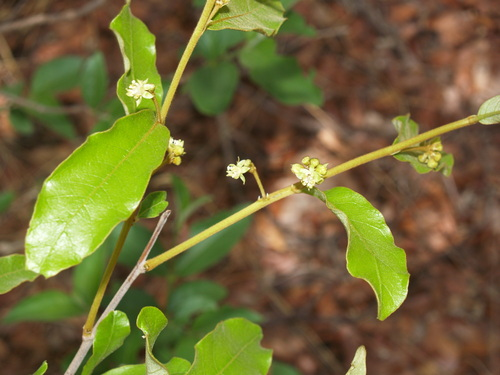

Dichapetalaceae
Dichapetalum Family
Dichapetalaceae is a pantropical family of trees, shrubs, and frequently lianas (woody vines). It is characterized by simple, alternate leaves (often with stipules), small flowers typically borne in axillary clusters (cymes), often with distinctively notched or two-lobed petals, and drupaceous fruits. Many species are notoriously poisonous due to the presence of fluoroacetate. The family belongs to the large order Malpighiales.
Overview
The Dichapetalaceae family comprises 3 genera (Dichapetalum, Stephanopodium, Tapura) and approximately 160-200 species, with the vast majority belonging to the genus Dichapetalum. The family has a wide distribution across the tropics of Africa, Madagascar, Central and South America, Southeast Asia, and the Pacific Islands, primarily inhabiting lowland tropical rainforests.
Key characteristics include their woody habit (trees, shrubs, or often lianas), simple alternate leaves with stipules (though often falling early), and small flowers arranged in axillary cymes. A peculiar feature in many species is the fusion of the inflorescence stalk (peduncle) with the petiole of the subtending leaf. The flowers often have distinctively notched or deeply cleft petals. The fruit is typically a drupe. Phylogenetically, Dichapetalaceae is placed within the large and diverse Rosid order Malpighiales.
Perhaps the most notable aspect of the family is the extreme toxicity of many species. They produce sodium fluoroacetate (Compound 1080) or related toxic fatty acids, making them responsible for significant livestock poisoning in regions where they occur (e.g., "Gifblaar" in South Africa). This toxicity also suggests potential for chemical ecological studies.
Quick Facts
- Scientific Name: Dichapetalaceae Baill.
- Common Name: Dichapetalum Family
- Number of Genera: 3
- Number of Species: Approximately 160-200
- Distribution: Pantropical (Africa, Madagascar, Americas, Asia, Pacific).
- Evolutionary Group: Angiosperms - Eudicots - Rosids - Fabids - Malpighiales
- Habit: Trees, shrubs, lianas; many species highly poisonous.
Key Characteristics
Growth Form and Habit
Plants are trees, shrubs, or very commonly lianas (woody climbers). They are typically evergreen.
Leaves
Leaves are arranged alternately along the stem. They are simple with usually entire margins (sometimes slightly toothed or wavy). The texture is often leathery (coriaceous). Venation is pinnate, often with secondary veins curving towards the apex (arcuate). Stipules are usually present at the base of the petiole, though they are often small and fall off early (caducous), leaving a small scar. The petiole is often articulated (has a distinct joint).
Inflorescence
Flowers are borne in axillary cymes or dense clusters (fascicles). A characteristic feature in many species of Dichapetalum is that the main stalk of the inflorescence (peduncle) is fused (adnate) for part or all of its length to the petiole of the subtending leaf, making the flower cluster appear to arise from the leaf stalk itself.
Flowers
Flowers are generally small, usually bisexual (sometimes unisexual, with plants then dioecious or polygamous), and radially symmetrical (actinomorphic) or slightly bilaterally symmetrical. They are typically 5-merous.
- Calyx: Consists of 5 sepals, which are free or fused at the base, often unequal in size, and frequently hairy.
- Corolla: Consists of 5 petals, which can be free or fused at the base into a short tube. A very distinctive feature is that the petals are often deeply notched, bifid (2-lobed), or cleft at the apex. Petals are sometimes absent in certain species. Color is usually white, greenish, or yellowish.
- Androecium: Usually consists of 5 fertile stamens that alternate with the petals. Filaments are often fused at their base, sometimes forming a tube, or may be fused to the corolla tube. Alternating with the fertile stamens, there are often staminodes (sterile stamens) or nectar-producing glands (together often referred to as the disc).
- Gynoecium: Features a superior ovary (in Dichapetalum, Stephanopodium) or sometimes an inferior ovary (in Tapura). It is composed of 2 or 3 fused carpels, forming an equal number of locules (chambers). A single style arises from the ovary, usually with a lobed stigma (as many lobes as carpels). Each locule typically contains 2 pendulous ovules attached near the apex (apical-axile placentation).
Fruits and Seeds
The fruit is typically a drupe (a fleshy fruit with one or more hard stones enclosing the seeds). It is often asymmetric, sometimes lobed or slightly winged, and usually contains 1-3 seeds. The drupe can be fleshy or leathery, and sometimes brightly colored (e.g., orange, red). Seeds lack endosperm or have very sparse endosperm.
Chemical Characteristics
The most significant chemical feature is the presence of highly toxic compounds, particularly fluoroacetate (sodium fluoroacetate or related C2 compounds) and toxic fatty acids (e.g., dichapetalins) in many species, especially within the genus Dichapetalum. Tannins are also commonly present.
Field Identification
Identifying Dichapetalaceae in tropical regions requires attention to habit, leaf details, inflorescence position, and flower structure:
Primary Identification Features
- Habit: Look for trees, shrubs, or often lianas (woody climbers) in tropical forests.
- Alternate, simple, entire leaves: Check for stipules or stipule scars at the base of the petiole. Petiole may be jointed (articulated).
- Axillary Cymes/Fascicles: Flowers clustered in the leaf axils. Check carefully if the inflorescence stalk appears fused to the petiole.
- Small flowers with notched/bifid petals: Examine flowers (may need magnification) for the characteristic 2-lobed petals (present in most species).
- Drupe fruit: Look for fleshy or leathery drupes, often asymmetric or lobed.
Secondary Identification Features
- Arcuate leaf venation: Secondary veins often curve upwards towards the leaf apex.
- Known toxicity: Local knowledge about poisonous plants ("gifblaar," "ratbane") can be a strong indicator. Exercise extreme caution; do not taste any part.
- Fused filaments: Stamens often have filaments joined at the base.
- Superior or Inferior Ovary: Ovary position varies between genera.
Seasonal Identification Tips
Vegetative features are useful year-round, while reproductive features are seasonal:
- Year-round: Habit (especially liana form), alternate simple leaves, stipule scars, and potentially articulated petioles are always present.
- Flowering Season (Varies): Small flowers in axillary clusters; check for notched petals and peduncle fusion.
- Fruiting Season: Look for the characteristic drupes.
Common Confusion Points
Distinguishing Dichapetalaceae from other tropical woody families with simple alternate leaves:
- Euphorbiaceae (Spurge family): Many tropical trees/shrubs/lianas, often have stipules, but frequently possess latex, have highly variable (often unisexual and reduced) flowers typically lacking notched petals, and fruit is commonly a 3-parted capsule (schizocarp).
- Chrysobalanaceae: Also in Malpighiales. Trees/shrubs with simple alternate leaves and stipules, but flowers are often slightly zygomorphic with stamens arising from one side, and the ovary/style is often basal or lateral. Fruit is a drupe, but floral details differ.
- Connaraceae: Mostly lianas or shrubs/trees, but leaves are typically compound (pinnate or trifoliate), lack stipules, and fruit is a distinctive follicle, often brightly colored and opening to show an arillate seed.
- Many other families: Numerous tropical families fit the general description. The combination of alternate simple leaves with stipules, axillary cymes (potentially fused to petiole), small flowers with notched/bifid petals, and drupaceous fruit is key for Dichapetalaceae.
- Focus on the combination: Tropical Woody Plant (often Liana) + Alternate Simple Entire Leaves + Stipules/Scars + Axillary Cymes (check peduncle fusion) + Notched/Bifid Petals + Drupe = Strong indication of Dichapetalaceae.
Field Guide Quick Reference
Look For:
- Tropical tree, shrub, or liana
- Leaves: Alternate, Simple, Entire
- Stipules present (or scars)
- Inflorescence: Axillary cymes/fascicles (peduncle often fused to petiole)
- Flowers: Small, 5-merous
- Petals: Often notched or bifid (2-lobed)
- Stamens: 5 (+ staminodes/glands)
- Ovary: Superior or Inferior (2-3 carpels)
- Fruit: Drupe
- Often highly poisonous
Key Variations:
- Habit (tree vs. shrub vs. liana)
- Peduncle fusion to petiole (present/absent)
- Petal shape (notched vs. entire vs. absent)
- Ovary position (superior vs. inferior)
- Fruit shape/lobing
Notable Examples
The family is best known for its toxic species, mostly within the large genus Dichapetalum:

Dichapetalum cymosum
Gifblaar / Poison Leaf
A small, low-growing shrublet native to southern Africa. Notorious for causing severe livestock poisoning due to high concentrations of sodium fluoroacetate in its young leaves. Grows from a large underground woody tuber.

Dichapetalum toxicarium
Ratbane
A West African species, often a shrub or liana. Its seeds contain toxic fatty acids and have been traditionally used (dangerously) as a rodenticide.

Tapura guianensis
(No common name)
A representative of the genus Tapura, found in the Neotropics (e.g., Guianas, Amazon). Trees or shrubs characterized by having an inferior ovary, unlike Dichapetalum. Flowers are small, often clustered on the branches.
Phylogeny and Classification
Dichapetalaceae is classified within the large and diverse order Malpighiales, which belongs to the Fabid clade of the Rosids (Eudicots). This order contains roughly 40 families and represents a major radiation of tropical flowering plants.
The exact position of Dichapetalaceae within Malpighiales has been explored using molecular data. It is generally placed within a clade that also includes families like Chrysobalanaceae, Euphroniaceae, Trigoniaceae, and Balanopaceae. This highlights relationships that were not always apparent based solely on morphology, given the vast diversity within Malpighiales (which ranges from willows and violets to spurges and mangroves).
Position in Plant Phylogeny
- Kingdom: Plantae
- Clade: Angiosperms (Flowering plants)
- Clade: Eudicots
- Clade: Rosids
- Clade: Fabids
- Order: Malpighiales
- Family: Dichapetalaceae
Evolutionary Significance
Dichapetalaceae is significant for several evolutionary reasons:
- Chemical Defense Evolution: The production of fluoroacetate, a potent toxin also used as a synthetic pesticide (1080), is a remarkable example of biochemical evolution for defense against herbivores. Studying its distribution within the family provides insights into the evolution of chemical defenses.
- Pantropical Distribution: Its presence across all major tropical regions suggests an ancient origin and dispersal history, likely linked to Gondwanan breakup or subsequent long-distance dispersal events.
- Liana Evolution: The prevalence of the liana habit within the family contributes to understanding the evolution of climbing strategies in tropical forests.
- Phylogenetic Placement: Helps to resolve relationships within the complex and rapidly radiating Malpighiales order.